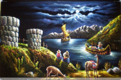
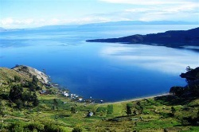

|
Se cuenta en las pampas cercanas de la ciudad de Chucuito, cubiertas actualmente por las aguas del lago Titicaca, existía una floreciente población, en cierta ocasión llegó una mujer forastera cargando en su espalda una gran tinaja o huakulla de barro con una tapa bien ajustada, muy penosamente vencida por la fatiga se alojó en una casa después de muchas suplicas, la gente del pueblo se habían olvidado las normas de hospitalidad, pero se quedó. Al siguiente día muy temprano quiso continuar su viaje, en realidad había pasado una noche muy mal por falta de una cama y alimentos, la habían alojado en los rincones de la cocina y no le habían invitado cena.  A causa de ello no tenía fuerza ni la energía para llevar la tinaja huakulla, suplicó a los dueños, para dejar su huakulla. Bueno, le permitieron dejar hasta su regreso, pero la mujer había dicho por favor no lo vayan a destapar y que tengan mucho cuidado. Aceptaron obsequiosamente los dueños de la casa, con la promesa de no hacerlo. A varios las hormigas les habían picado constantemente en la comunidad y se preguntaban que tendría la tinaja, porque les había recomendado no quitar la tapa. No podían soportar tanto tiempo la inquietud y con las esperanzas de hallar algo muy valioso quitaron la tapa, entonces muy consternados vieron brotar un violento chorro de agua, el agua salía interminablemente inundando al final toda la comarca y a los habitantes de los moradores, no tuvieron tiempo para escapar.  Juntamente con el chorro de agua salieron los peces, las gaviotas, flamencos, patos, chanchos, patillos, zambulledores, q’eñola, qaslachup’uquña y todo las aves y seres vivientes que en la actualidad viven en las aguas de Titicaca, que a su vez son el efecto de ambición y la curiosidad de los habitantes de ese pueblo. Se cuentan también que en ciertas horas de la noche y en determinados días de la semana se observa en el fondo de lago una ciudad desaparecida especialmente en aquellos momentos que se llama, ahora mal momento.
|
Projecto v1
Cuento 1 : El Origen Del Lago Titicaca
Obra publicada con Licencia Creative Commons Reconocimiento Compartir igual 4.0